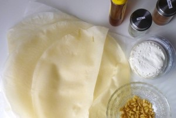
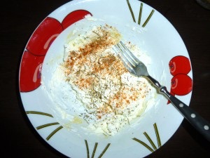
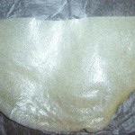
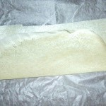
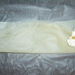
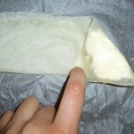
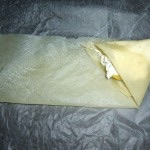
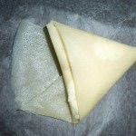
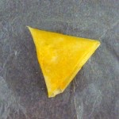
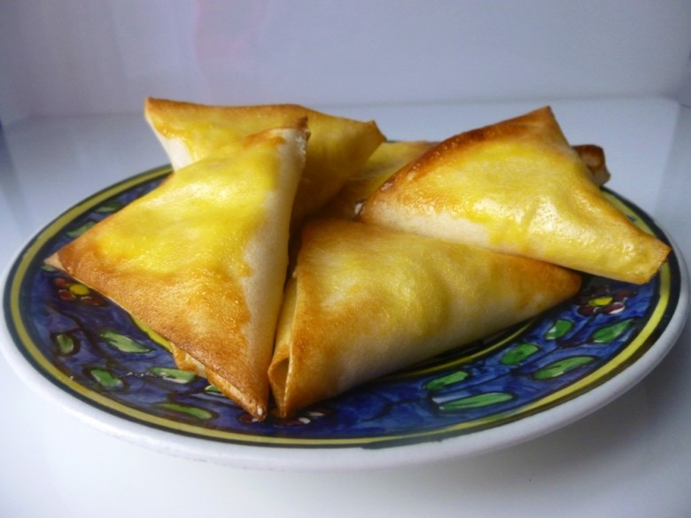

Samoussas chèvre miel

Bonjour tout le monde! J’ai décidé de partager avec vous cette délicieuse recette de samoussas chèvre miel.
Les samoussas sont des petits beignets en forme de triangle fait à partir de feuille de brick et peuvent être farcis d’un peu de tout ce qui vous passe sous la main (salés , sucrés il n’y a pas de règles!). Pour certains ils sont très facile a réaliser pour d’autres l’opération s’avère plus compliquée.. Personnellement la toute première fois que j’en ai fait c’est simple : tout a coulé dans le four du coup on a mangé des samoussas chèvre miel vides^^
Impossible de rester sur cet échec j’ai donc renouvelé l’opération dès le lendemain en prenant soin cette fois de ne pas refaire les même erreurs. Le résultat? Nous nous sommes régalés!! 🙂
J’ai choisi de vous faire partager mes samoussas aux chèvre-miel car j’adoooooooore l’association de ces deux ingrédients. Idéals en entrée sur un lit de salade ou en apéro (succès garanti) ces samoussas sauront ravir tous les gourmands!
De plus cette recette est très facile et rapide a réaliser (une fois qu’on a compris comment faire le pliage et le collage) c’est pourquoi j’ai fait une recette pas à pas afin de vous aider au mieux pour ne pas rater le pliage.
Je vous donne maintenant la recette de ces délicieux samoussas chèvre miel, et n’hésitez pas à passer voir mes samoussas à la crevette 🙂
Ingrédients
- feuilles de brick - 5
- chèvre frais - 200g
- oeuf - 1
- miel
- thym - optionnel
- paprika - optionnel
- pignons de pin - optionnel
Instructions
- Mélanger le miel et le fromage de chèvre dans un bol et y ajouter les épices de votre choix (thym , paprika, herbes de Provence... au choix!)
- En vous aidant des photos suivez pas à pas le pliage des samoussas.
- Au moment de poser ma farce sur les feuilles de brick je rajoute quelques pignons de pins (voir photo)
- Dans un bol, mélanger l’œuf avec une pincée sel et badigeonner vos samoussas. Petite astuce : Pour éviter que les samoussas ne s'ouvrent pendant la cuisson , bien coller à l'aide de l’œuf l’extrémité du samoussa
- Enfourner 8 min à 200°
- Servir chaud de préférence










Les tips de la communauté
Samoussas appréciés pour leur combinaison fromage-miel. Les instructions de pliage sont très utiles. L'auteure accepte de tester les conseils des lecteurs sur la préparation à l'avance.
Astuces
- Badigeonner de beurre avant cuisson au four
- Préparer à l'avance la veille et conserver cru au frigo
- Cuire juste avant de servir pour profiter de l'apéritif
Variantes suggérées
- Camembert, pommes et miel
- Préparation la veille en cru
Ajustements signalés
- juste les badigeonné de beurre avant de les mettre au four